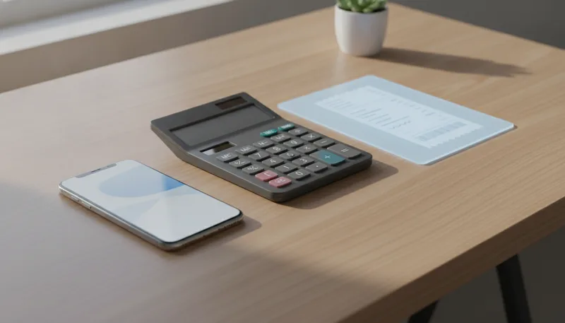
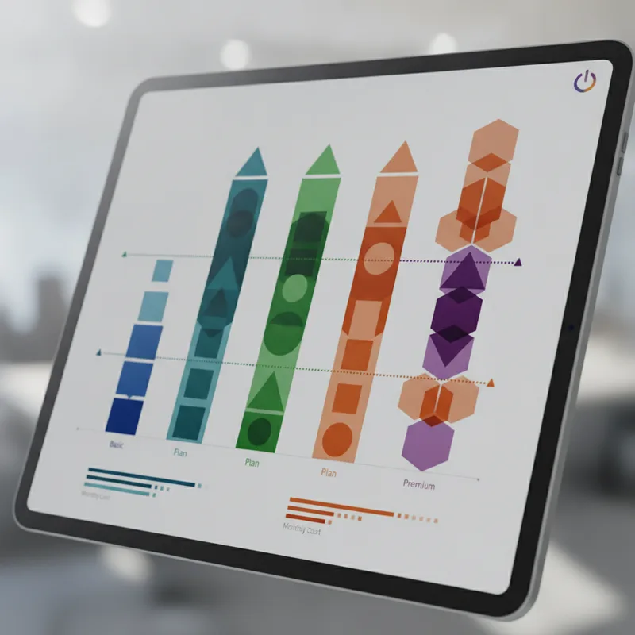

구독료 명세서에서 매달 빠져나가는 금액을 보면 결제 방식에 따라 차이가 나는 것을 쉽게 볼 수 있습니다. 유튜브 프리미엄은 결제 기기와 요금제 선택에 따라 매달 지급하는 금액이 크게 달라집니다. 특히 유튜브 뮤직을 듣지 않는 사용자라면 새로 도입된 요금제를 활용할 때 고정 지출을 줄일 수 있습니다.

현재 국내에서 이용 가능한 유튜브 프리미엄 결제 금액은 접속하는 경로에 따라 나뉩니다. PC 웹 브라우저나 안드로이드 기기에서 결제할 때 적용되는 기본 금액은 월 14,900원입니다. 반면 아이폰이나 아이패드 등 iOS 기기 내부 앱에서 바로 결제하면 수수료가 더해져 월 19,500원이 청구됩니다.
동일한 계정과 동일한 혜택을 이용함에도 매달 4,600원의 차이가 발생합니다. 1년으로 환산하면 55,200원을 더 내게 되는 셈입니다. 아이폰을 사용하는 환경이라도 사파리나 크롬 같은 웹 브라우저로 접속해 결제하면 웹 기준 가격인 14,900원으로 적용됩니다.
| 요금제 종류 | 결제 경로 | 월 이용료 | 주요 포함 혜택 | 제외 혜택 |
|---|---|---|---|---|
| 프리미엄 (기존) | PC / 안드로이드 / 웹 | 14,900원 | 모든 동영상 광고 제거, 오프라인 저장, 백그라운드 재생, 유튜브 뮤직 | 없음 |
| 프리미엄 (기존) | iOS 앱 내 결제 | 19,500원 | 모든 동영상 광고 제거, 오프라인 저장, 백그라운드 재생, 유튜브 뮤직 | 없음 |
| 프리미엄 라이트 | PC / 안드로이드 / 웹 | 8,500원 | 비음악 동영상 광고 제거, 오프라인 저장, 백그라운드 재생 | 유튜브 뮤직, 음원 권리자 동영상 광고 제거 |
| 프리미엄 라이트 | iOS 앱 내 결제 | 10,900원 | 비음악 동영상 광고 제거, 오프라인 저장, 백그라운드 재생 | 유튜브 뮤직, 음원 권리자 동영상 광고 제거 |
공정거래위원회의 자진 시정 절차를 거쳐 출시된 유튜브 프리미엄 라이트 요금제는 음악 스트리밍 서비스인 유튜브 뮤직을 제외한 영상 중심 요금제입니다. 국내 정식 출시 요금은 웹 결제 기준 월 8,500원, iOS 앱 결제 기준 월 10,900원으로 책정되었습니다.
기존 프리미엄 요금제와 라이트 요금제의 가장 큰 차이는 유튜브 뮤직 제공 여부입니다. 평소 멜론이나 지니뮤직, 스포티파이 등 별도의 음원 플랫폼을 구독하고 있다면 기존 프리미엄의 음악 혜택은 중복 지출이 되기 쉽습니다. 이런 경우에는 라이트 요금제로 전환하면 월 6,400원을 절약하게 됩니다.
해외에서 출시된 라이트 요금제는 오직 영상 광고 제거 기능만 제공하는 경우가 많습니다. 반면 국내에 출시된 라이트 요금제는 백그라운드 재생과 오프라인 저장 기능이 함께 포함되었습니다. 화면을 끈 상태로 강연이나 팟캐스트 성격의 영상을 들을 때 유용합니다.
다만 제약 사항도 명확합니다. 뮤직비디오나 음원 저작권자가 권리를 보유한 영상, 그리고 검색 결과나 탐색 탭 일부 영역에서는 광고가 노출될 수 있습니다.
여기서 갈립니다. 평소 유튜브로 음악을 자주 들 거나 뮤직비디오 시청 비중이 높은 사용자라면 라이트 요금제 선택 시 불편함을 느낄 수 있습니다. 반면 일반 예능, 교양, 브이로그 위주로 시청한다면 체감하는 차이가 적습니다.

해외의 경우 미국은 개인 요금제가 월 15.99달러로 인상되었으며, 일본은 월 1,280엔(약 11,000원~12,000원 대) 수준을 유지하고 있습니다. 한국은 가족 요금제가 도입되지 않은 국가 중 하나이기 때문에 해외 우회 결제를 시도하는 경우가 존재해 왔습니다.
구글은 가상사설망(VPN)을 활용한 국가 우회 가입에 대한 단속을 지속적으로 강화하고 있습니다. 가입한 국가와 실제 주로 접속하는 국가의 위치 정보가 장기간 일치하지 않을 경우, 서비스 이용이 정지되거나 멤버십이 강제 취소되는 사례가 늘고 있습니다.
계정 단속으로 인해 기존에 저장해 둔 재생목록이나 시청 기록을 잃어버리는 위험이 발생하므로, 가급적 국내 정식 요금제나 통신사 제휴 혜택을 활용하는 편이 안전합니다. 상세한 멤버십 규정은 YouTube 고객센터 공식 안내 페이지에서 확인해 볼 수 있습니다.
매달 지출되는 구독료를 최소화하려면 가입 전 결제 환경과 본인의 시청 습관을 먼저 점검해야 합니다. 아래 단계를 순서대로 확인해 가장 적합한 요금 형태를 선택해 보세요.
처음에는 기존 멤버십을 해지하고 웹으로 재결제하는 과정이 다소 번거롭게 느껴질 수 있습니다. 하지만 한 번 설정해 두면 매달 수천 원씩 자동 절약되는 효과가 있습니다.
음악 관련 영상을 제외한 일반 동영상 다운로드 목록은 그대로 유지됩니다. 다만 라이트 요금제에서 지원하지 않는 음원 권리자 관련 영상은 오프라인 재생이 제한될 수 있습니다.
유튜브 앱이 아닌 사파리(Safari)나 크롬(Chrome) 같은 모바일 웹 브라우저로 유튜브 웹사이트에 접속해 결제하면 8,500원 정가로 가입할 수 있습니다.
일반 영상 형태의 팟캐스트나 강연 콘텐츠는 백그라운드 재생을 지원합니다. 단, 유튜브 뮤직 카테고리에 속한 음원 중심 콘텐츠는 백그라운드 재생이 제한됩니다.
가족 요금제 도입 여부는 구글의 정책에 따라 결정되며 현재까지 국내 정식 도입 일정은 확정된 바 없습니다. 이용 조건과 가격 정책은 변경될 수 있으므로 정기적으로 공식 공지사항을 확인하는 것이 좋습니다.
| 슬롯 | 위치 | 기준 블록 | 근거 |
|---|---|---|---|
🖼 이미지 1 news-20261023-op2u-01-intro.webp | 문단 1 뒤 | P · 구독료 명세서에서 매달 빠져나가는 금액을 보면 결제 방식에 따라 차이가 | 도입부 첫 문단 뒤(히어로) |
| 📢 광고 1 | 문단 7 앞 | H2 · 프리미엄 라이트 요금제 장단점 분석 | H2 앞 · 직전 광고와 — 간격 |
🖼 이미지 2 news-20261023-op2u-02-middle.webp | 문단 12 앞 | H2 · 해외 요금제 및 우회 이용 시 주의할 점 | 글자수 기준 중간에 가장 가까운 소제목 앞 |
| 📢 광고 2 | 문단 20 앞 | H2 · 자주 묻는 질문 | H2 앞 · 직전 광고와 1247자 간격 |
🖼 이미지 3 news-20261023-op2u-03-end.webp | 문단 28 앞 | P · 가족 요금제 도입 여부는 구글의 정책에 따라 결정되며 현재까지 국내 정식 | 마지막 문단 앞(마무리) |